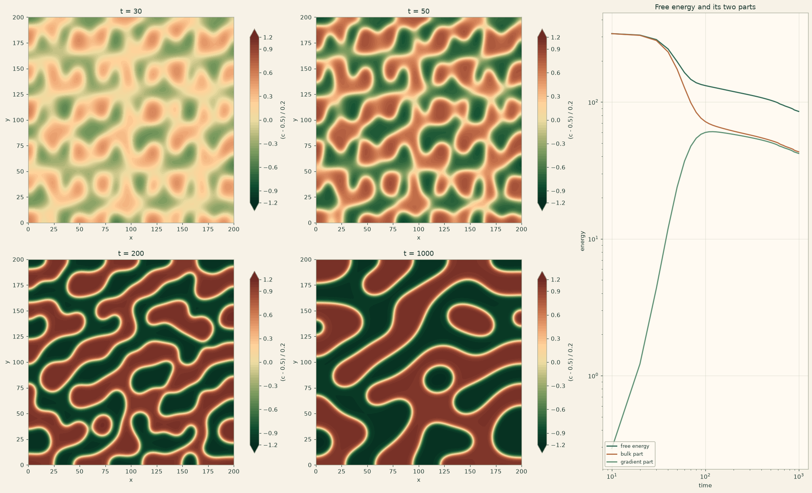
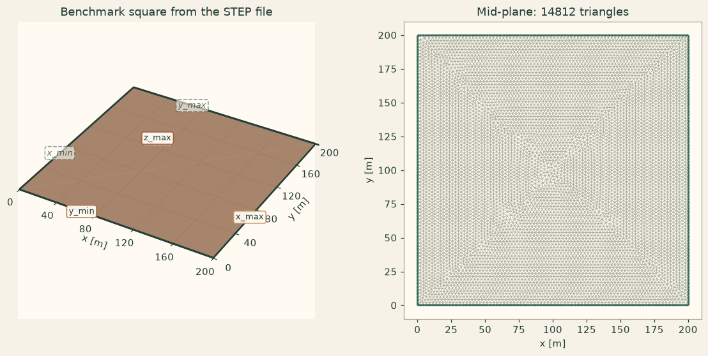

Docs › Examples › Spinodal decomposition benchmark
Phase field, Cahn-Hilliard · 2D
Spinodal decomposition benchmark
The first benchmark of the phase-field community: a concentration close to 0.5 decomposes into the phases 0.3 and 0.7 on a 200 x 200 square with no-flux walls and coarsens.
Run locally with OneSimulation. The example downloads are free. Running them requires an activated runtime. Runtime Alpha 0.2.1a7 · CPython 3.13 on macOS (Apple Silicon), Ubuntu 22.04 (x86-64), and Windows x64. Installation and activation · View pilot plans. Scope of the reference checks.

What it computes
OneSimulation cuts the square from a STEP file and solves the Cahn-Hilliard equation for concentration and chemical potential together on quadratic triangles, with the benchmark's double well written in the order parameter. 100 energy-stable convex-splitting steps follow the decomposition and the start of the coarsening to t = 1000; mean concentration, free energy and its bulk and gradient parts are integrals of the solution. The script that builds the STEP file comes with the notebook.
What it checks
Interface energy 0.04770 and width 4.47 against the benchmark's 0.01508 sqrt(kappa rho_s) = 0.04769 and 4.47; the mean concentration 0.5025 does not change in the last digit, the free energy falls in all 100 steps from 317 to 85, the phases reach 0.296 and 0.705, and the bulk and gradient parts of the interface energy approach equipartition (ratio 1.03 at t = 1000).
Geometry
The notebook starts at the import of the CAD file spinodal_decomposition_benchmark.step: STEP (AP242), readable by any CAD program, with the names of the faces that the boundary conditions use. Put it next to the notebook.

The geometry script
The script spinodal_decomposition_benchmark_geometry.py builds the geometry with the CAD objects of OneSimulation and writes the file. Change a dimension there, run it, and run the notebook again.
"""Geometry of the OneSimulation example "Spinodal decomposition benchmark".
Builds the benchmark square, 200 x 200 in the dimensionless units of the benchmark and 1 thick,
with the CAD objects of OneSimulation and writes spinodal_decomposition_benchmark.step. The faces
keep their names x_min, x_max, y_min, y_max, z_min and z_max in the file; the example computes on
the mid-plane.
"""
from onesim.cad.d3 import Box
square = Box(length=200.0, width=200.0, height=1.0)
square.save("spinodal_decomposition_benchmark.step")The notebook
The complete notebook, cell by cell. Run it to produce the figures and the comparison printout.
The first benchmark of the phase-field community (Jokisaari et al., 2017) follows a concentration \(c\) that starts close to 0.5 and decomposes, by the Cahn-Hilliard equation,
into the two phases \(c_\alpha=0.3\) and \(c_\beta=0.7\), with \(\varrho_s=5\), \(\kappa=2\) and \(M=5\) in the dimensionless units of the benchmark. Variant b uses the square \(200\times200\) with no-flux walls:
| boundary | condition | |---|---| | all walls | no flux, \(\mathbf n\cdot M\nabla\mu=0\), and \(\mathbf n\cdot\nabla c=0\) | | initial state | \(c=0.5+0.01\,[\cos 0.105x\cos 0.11y+(\cos 0.13x\cos 0.087y)^2+\cos(0.025x-0.15y)\cos(0.07x-0.02y)]\) |
The double well is written in the order parameter \(\varphi=(c-0.5)/0.2\), which runs from \(-1\) to \(+1\): \(f=\tfrac{\beta}{4}(\varphi^2-1)^2\) with \(\beta=4\varrho_s\,0.2^4\), the gradient coefficient becomes \(\kappa\,0.2^2\) and the mobility \(M/0.2^2\); the free energy is unchanged.
The square comes from the CAD file spinodal_decomposition_benchmark.step, written by spinodal_decomposition_benchmark_geometry.py with the CAD objects of OneSimulation.
Reference. A. M. Jokisaari, P. W. Voorhees, J. E. Guyer, J. Warren, O. G. Heinonen, Benchmark problems for numerical implementations of phase field models, Comput. Mater. Sci. 126 (2017) 139-151. The benchmark states the interface energy \(\sigma=0.01508\sqrt{\kappa\varrho_s}\) and the interface width \(l=4.47\); the mean concentration must stay at its initial value, and the total free energy must decrease. At equilibrium every interface stores half of its energy in \(f\) and half in \(\tfrac{\kappa}{2}|\nabla c|^2\) (equipartition of a Ginzburg-Landau interface).
import numpy as np
from onesim.cad.exchange import load
from onesim.meshing import TriangularMesher
from onesim.numerics import Numerics
from onesim.numerics.fem import FiniteElement, Lagrange
from onesim.numerics.linear import SparseDirect
from onesim.numerics.nonlinear import Newton
from onesim.numerics.time import ConvexSplitting
from onesim.physics.hydrodynamics import (
CahnHilliard,
CompositionGradient,
DoubleWellFreeEnergy,
PhaseFlux,
)
from onesim.simulation import Problem, Simulation
from onesim.simulation.initial_conditions import InitialValue
from onesim.visualization import plots, theme
theme.set()Geometry and mesh
section cuts the loaded square at half thickness. Quadratic triangles of 2.5 units resolve the interface width 4.47 with two to three elements.
solid = load("spinodal_decomposition_benchmark.step")
square = solid.section((0, 0, 1), origin=(0, 0, 0.5))
mesh = TriangularMesher(target_size=2.5).generate(square)
fig = plots.figure(1, 2, size=(13, 5.5))
plots.geometry(
solid,
labels=False,
camera=plots.Camera(elevation=35, azimuth=-60),
title="Benchmark square from the STEP file",
ax=fig[0],
)
plots.mesh(
mesh,
groups=("all",),
legend=False,
title=f"Mid-plane: {mesh.cell_count} triangles",
ax=fig[1],
)
plots.show()Model
The benchmark parameters in the order parameter \(\varphi\); DoubleWellFreeEnergy takes the equivalent interface tension and width. ConvexSplitting keeps the free energy decreasing for every step size, so 100 steps of 10 time units cover the decomposition and the start of the coarsening up to \(t=1000\).
rho, c_alpha, c_beta, kappa, mobility = 5.0, 0.3, 0.7, 2.0, 5.0
half = (c_beta - c_alpha) / 2
beta, gradient = 4 * rho * half**4, kappa * half**2
energy = DoubleWellFreeEnergy(
surface_tension=2 * np.sqrt(2) / 3 * np.sqrt(beta * gradient),
interface_width=np.sqrt(gradient / beta),
)
alloy = CahnHilliard(
domain=square.domain(), free_energy=energy, mobility=mobility / half**2
)
initial = (
lambda x, y: (
0.01
* (
np.cos(0.105 * x) * np.cos(0.11 * y)
+ (np.cos(0.13 * x) * np.cos(0.087 * y)) ** 2
+ np.cos(0.025 * x - 0.15 * y) * np.cos(0.07 * x - 0.02 * y)
)
)
/ half
)
problem = Problem(
name="Spinodal decomposition",
geometry=square,
physics=(alloy,),
initial_conditions=(InitialValue(alloy.composition, initial),),
boundary_conditions=(
PhaseFlux(physics=alloy, boundary=square.boundaries.all),
CompositionGradient(physics=alloy, boundary=square.boundaries.all),
),
)
numerics = Numerics(
spatial=FiniteElement(element=Lagrange(order=2), quadrature_order=4),
linear_solver=SparseDirect(),
nonlinear_solver=Newton(
linear_solver=SparseDirect(), relative_tolerance=1e-9, absolute_tolerance=1e-12
),
time_integrator=ConvexSplitting(),
)
result = Simulation(problem=problem, mesh=mesh, numerics=numerics).run(
start_time=0.0, end_time=1000.0, time_step=10.0
)
phase = result.field(alloy.composition)Results
Mean concentration, free energy and the two parts of the interface energy are integrated over the square; the concentration is \(c=0.5+0.2\,\varphi\).
times = np.asarray(phase.times)
area = square.size[0] * square.size[1]
mean = 0.5 + half * np.asarray(phase.integrate().values) / area
free_energy = np.asarray(result.field(alloy.free_energy_density).integrate().values)
bulk = np.asarray(
phase.derive(lambda p, x: energy.density(p), name="bulk", unit="J/m^3")
.integrate()
.values
)
interface = np.asarray(
phase.derive(
lambda g, x: 0.5 * gradient * np.sum(g * g, axis=-1),
name="gradient",
unit="J/m^3",
uses="gradient",
)
.integrate()
.values
)
print(
f"interface energy: sigma = {energy.surface_tension:.5f} (benchmark 0.01508 sqrt(kappa rho_s) = {0.01508 * np.sqrt(kappa * rho):.5f}), "
f"width 2 sqrt(2) W = {2 * np.sqrt(2) * energy.interface_width:.2f} (benchmark 4.47)"
)
print(
f"mean concentration: {mean[0]:.12f} at t = 0, largest change {np.max(np.abs(mean - mean[0])):.1e}"
)
print(" t free energy bulk / gradient part")
for t in (10.0, 30.0, 50.0, 100.0, 200.0, 500.0, 1000.0):
i = int(np.argmin(np.abs(times - t)))
print(f"{times[i]:7.0f} {free_energy[i]:14.3f} {bulk[i] / interface[i]:12.3f}")
print(
f"free energy steps with an increase: {int(np.sum(np.diff(free_energy) > 1e-12 * free_energy[0]))}"
)
print(
f"phases at t = {times[-1]:.0f}: c from {0.5 + half * phase.values.min():.4f} to {0.5 + half * phase.values.max():.4f} "
f"(equilibrium {c_alpha} and {c_beta})"
)Figure
The concentration at four times, and the free energy with its bulk and gradient parts.
nearest = lambda t: float(times[np.argmin(np.abs(times - t))])
fig = plots.figure(
layout=[["early", "spinodal", "energy"], ["coarse", "late", "energy"]],
size=(19, 11.5),
)
for panel, t in zip(
(fig["early"], fig["spinodal"], fig["coarse"], fig["late"]),
(30.0, 50.0, 200.0, 1000.0),
):
plots.surface(
phase,
time=nearest(t),
limits=(-1.05, 1.05),
subdivisions=2,
xlabel="x",
ylabel="y",
label="(c - 0.5) / 0.2",
title=f"t = {nearest(t):.0f}",
ax=panel,
)
plots.line(
y={
"free energy": (times[1:], free_energy[1:]),
"bulk part": (times[1:], bulk[1:]),
"gradient part": (times[1:], interface[1:]),
},
scale="loglog",
xlabel="time",
ylabel="energy",
title="Free energy and its two parts",
legend="lower left",
ax=fig["energy"],
)
plots.show()Going further
Variant a of the benchmark uses periodic walls, variants c and d a T-shaped domain and the surface of a sphere; run longer to reach the late coarsening stage, where only a few large domains remain.